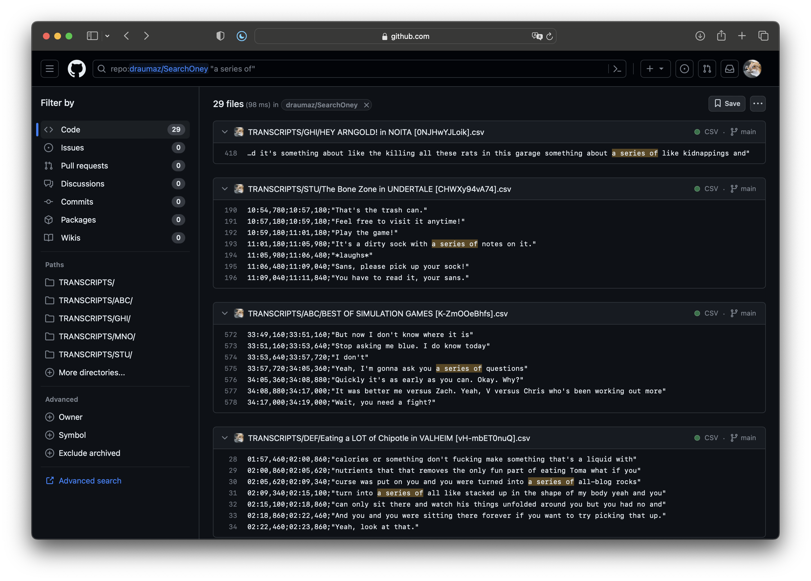
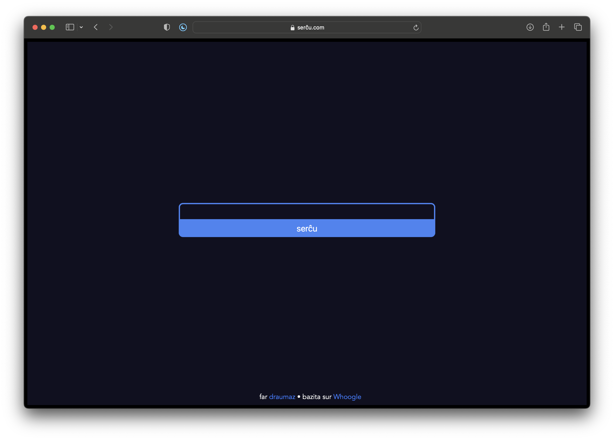
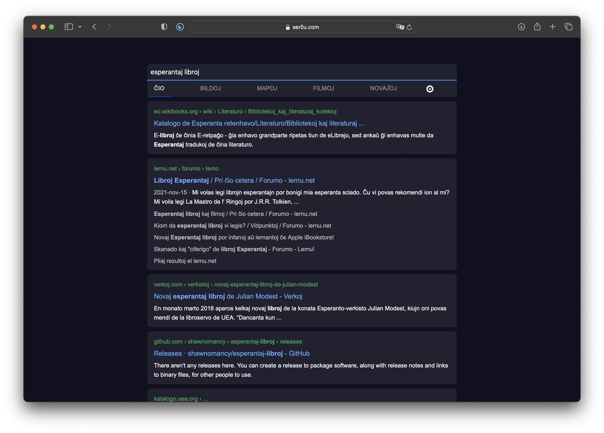

draumaz.xyz
quirked up white girl makes some weird scripts
My name is Emma, and online I usually call myself draumaz because it sounds fun.
- Despite studying a bevy of programming languages, I'm terribly smitten by sh.
- I'm fluent in English and Dutch, speak Esperanto at a high level, and can make basic conversation in French and German.
- Musically speaking I'm really into dubstep, bass house, and hyperpop!
- I'm from Seattle, the land of rain. It's a special, cozy rain that lends itself well to creativity.
- My ultimate goal with my work is that someone will one day find it and be all like "woah, how did I live without this?"
"Are you true?"
GitHub
Mastodon
My Projects
Butterfly
Butterfly v0.16_04 | KILLS: 0 | DEATHS: 0 | SPARES: 0
PLAYR: Aradi | HP: 26 | STR: 14
ENEMY: Goblin | HP: 2 | STR: 7
[FIGHT]
[ITEMS] <
[SPARE]
[EXIT ]
[1x POTION]
[0x SPEAR ] <
[1x POISON]
[BACK ]
- A turn-based text-based battle game. I wrote this to teach myself interactive programming.
- Requires a Rust compiler.
- Direct link
macpac
[~] % macpac install zsh-syntax-highlighting
*DOWNLOAD* | zsh-syntax-highlighting@1386f12.tar.gz 🔁✅
*INSTALL * | zsh-syntax-highlighting@1386f12.tar.gz 🔁✅
[~] %
- Install packages like it's the 90s, but on your modern Mac.
- Pick a PATH to live in, and macpac helps you build and install packages.
- Direct link
SearchOney

- An OneyPlays video transcript library.
- At some point this will become a full-text search engine. For now, GitHub search works surprisingly well.
- Direct link
serĉu.com


- An Esperanto-language search engine.
- Powered by Whoogle, tweaked by me, used by Esperantists worldwide.
- Direct link (en Esperanto)